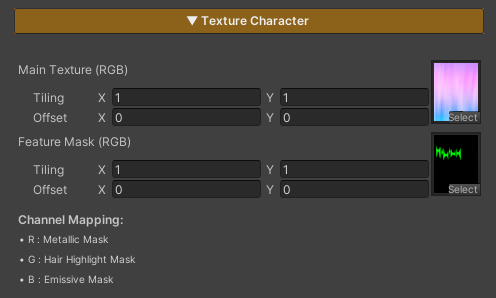

Video Showcase
last_modified_at: %Y->-
Features

The features of this shader are designed to be divided into two main groups, based on their roles and impact on performance.
1. Locked Features
These features form the core systems of the shader and are designed to be always enabled.
- They provide the fundamental structure required for the shader to function
- They cannot be disabled
- Enabling these features does not impact performance
2. On / Off Features
These features are optional, allowing users to enable or disable them as needed.
- They can be toggled on or off through the material
- When disabled, the system removes the related calculations entirely, helping maintain appropriate shader performance
- Features in this group cannot be toggled at runtime and should be configured during setup or before use
last_modified_at: %Y->-
Texture Character

This shader uses two main types of textures, as described below:
1. Main Texture (RGBA)
The primary texture used for rendering the character’s surface.
Parameters
- RGB (Red, Green, Blue) : Defines the character’s base color
- A (Alpha) : Controls the character’s transparency; darker masked areas become more transparent
2. Feature Mask (RGB)
A texture used to control the operating areas of various features by masking each channel.
Parameters
- R (Red) : Defines where the Metallic feature is applied
- G (Green) : Defines where the Hair Highlight feature is applied
- B (Blue) : Defines where the Emissive feature is applied
Some features may affect the whole character or not work as expected.
last_modified_at: %Y->-